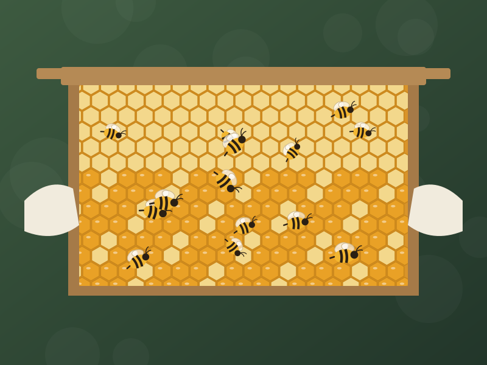

About the farm
Three generations of listening to the bees.
We're a small family farm in Your District, Your State, India. We grow a little, forage a lot, and let our bees set the pace.
Our story
How it began
Our grandfather kept a few wild colonies in clay pots at the edge of the fields — for the family, and for the coconut and mango trees they helped pollinate. In 2014 we moved them into proper wooden hives, learned modern beekeeping, and started sharing the honey with neighbours.
Word travelled. Today we care for more than a hundred colonies across four hive yards, and every jar we sell still comes from them. We are not a brand that buys honey and puts a label on it — we are the beekeepers.

Beekeeping practices
Bees first, honey second
- Surplus only. We leave enough honey in every hive for the colony to thrive through lean months.
- No sugar in your jar. We never feed sugar syrup while bees are making the honey we harvest.
- Gentle handling. Hives are opened calmly with a cool smoker and only as often as needed.
- Chemical-free around harvest. No pesticides on our land and no hive treatments during a honey flow.
- Natural forage. Hives sit among wildflowers, orchards and forest edge — never next to sprayed monoculture.

Location & region
Where our honey comes from
Our hive yards are spread across Your District, Your State, India — each with different flowers, which is why each harvest tastes different.
Home yard
Mixed farmland and hedgerows — the source of our Wildflower honey.
Forest edge
Hives placed near native forest for our darker Wild Forest honey.
Moringa orchards
We move hives to partner orchards during peak moringa bloom.
Sunflower fields
Neighbouring farms welcome our bees for pollination each season.
Harvesting & processing
Minimal handling, on purpose
We harvest only fully capped frames, when the bees themselves have decided the honey is ripe. It is extracted cold by spinning, strained once through cloth to remove wax, rested so air bubbles rise, and bottled by hand — all on the farm.
No heating. No blending with other honey. No added sugar, syrup or preservatives.
Follow a jar from hive to bottle
Life on the farm
From the hive yard


Come taste the difference
Book a jar from the current harvest — pay when we confirm.